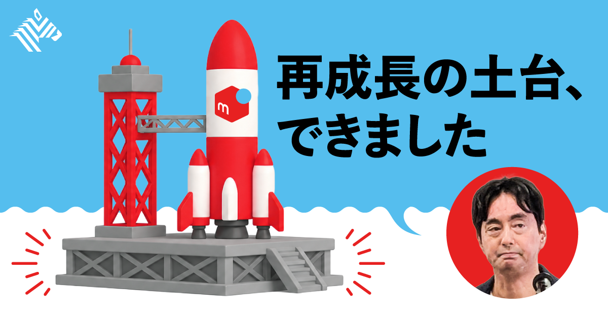
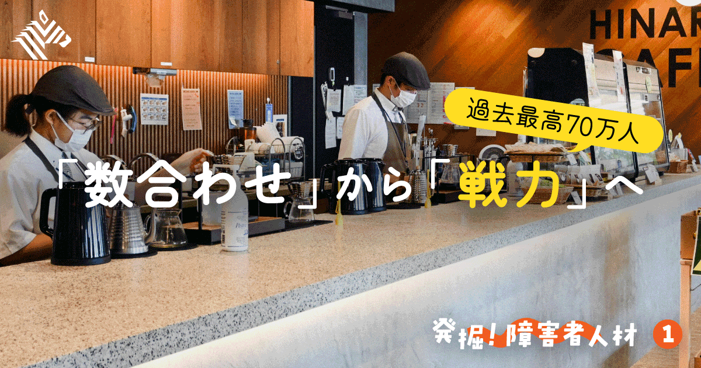
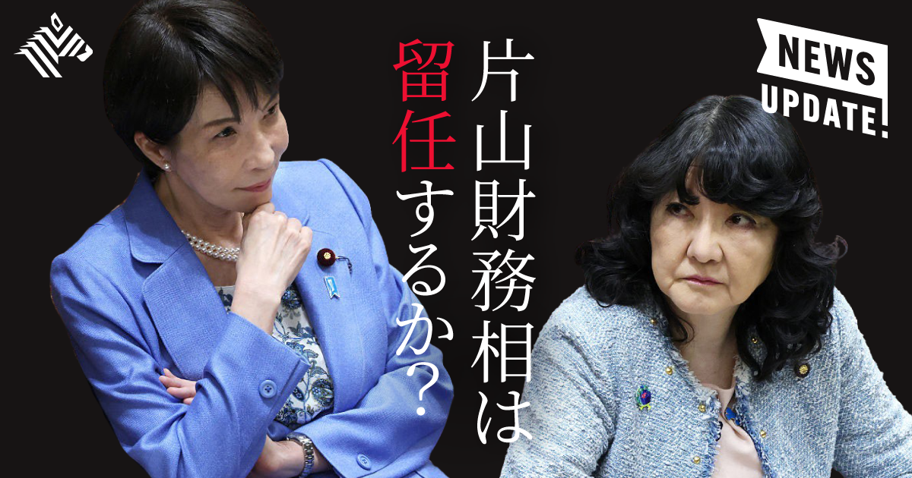
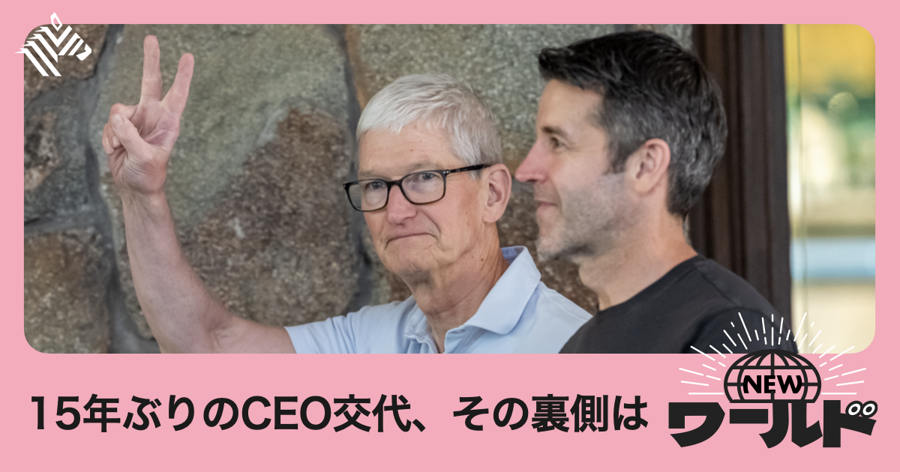

01
【最高益の裏側】メルカリの「AIで収益化」戦略がお手本すぎる
発行日時：2026年9月3日 05:30 JST ・ NewsPicks編集部

あなたに関係ありそうな理由
AIを導入した事実ではなく、既存サービスの価値と組織の仕事の進め方をどう変えると収益につながるかを具体的に追えるためです。
概要
この記事は、メルカリがAIを派手な新規機能として先に置くのではなく、売り手と買い手の「コア体験」を磨き直す手段として使い、再成長につなげようとしている過程を追う。2026年6月期の売上収益は2292億円で前年比19％増、コア営業利益は441億円で同60％増、純利益は354億円で同35.6％増となり、いずれも過去最高を更新した。売上成長率が前期の2.8％増から3年ぶりの2桁成長へ戻り、流通取引総額も15％増えた背景として、山田進太郎CEOはコア体験の強化とAI活用を挙げる。記事がいうコア体験は、撮影、説明文作成、値下げ交渉、梱包・発送、評価までの一連の売買だ。返品詐欺などで揺らいだ信頼を補うため、全額補償や鑑定センターを整備し、不正検知のスコア化、絞り込み検索、レコメンド、AI出品支援へAIを使った。まず取引を安心・便利にしてGMVを伸ばす、という順番である。組織面では約100人のAI Task Forceを発足させ、全従業員のAIツール利用率は100％に達した。だが記事は、開発組織がAI支援を受ける段階から、AIエージェントが工程を担う段階へ向かう途中であり、法務・人事・広報・経理を含めると業務の定義や完了条件の言語化が難所だと伝える。今後はショッピングエージェントや、40億件以上の取引データを使う検索・推薦基盤も構想する。表示コメントでも、AI導入率より先に、顧客体験の阻害要因と役割分担を設計し直す必要があるという論点が目立った。AIで稼ぐとは、ツールを配ることではなく、顧客価値、仕事の流れ、判断の責任をつなぎ直す仕事だと読める。この順序は、AIに何を任せるかより先に、利用者が不安を感じる場面、社員が判断を引き継ぐ場面、数字で追うべき改善を切り分ける考え方でもある。記事は、組織全体の成熟度には差があることを隠さない。だからこそ、全社利用率の高さを成果と混同せず、個々の工程で品質、速度、安心感が本当に改善したかを検証し続けることが重要になる。経営側は、収益への寄与を短期の削減額だけでなく、継続利用や信頼の回復まで含めて測る必要がある。その数字の検証を継続する姿勢が極めて重要だ。
仕事や会話で使える一言
「AIの収益化は、導入率より先に、顧客の困りごとと仕事の流れをつなぎ直せるかで決まります。」
NewsPicks原文を読む
02
【70万人突破】障害者雇用を「戦力」にする時代がきた
発行日時：2026年9月3日 05:30 JST ・ NewsPicks編集部

あなたに関係ありそうな理由
多様な人が働けるように仕事を分け、指示と支援を整えることが、組織全体の業務設計と生産性にどう結びつくかを考える材料になるためです。
概要
この記事は、障害者雇用を法定雇用率の達成だけで終わらせず、本業に価値を出す「戦力」として設計する企業の現場を取材する。民間企業で働く障害者は2025年に初めて70万人を超え、2026年7月から法定雇用率は2.7％へ上がった。従業員1000人の企業なら27人に相当するが、2025年時点で達成企業は全体の46％にとどまる。記事は、採用できないことだけでなく、どんな業務を任せ、どう支えるかを決められないことが課題だと置く。事例のCTCひなりは、伊藤忠テクノソリューションズの特例子会社として、農福連携、カフェ、オフィス、IT関連を担う。2026年4月時点で社員257人のうち177人に障害があり、4〜5人に1人のジョブサポーターを置く。曖昧な指示を避け、農作物の収穫サイズを測る器具まで用意することで、作業の品質と安全を支える。浜松では10の農家と請負契約を結び、29人が農作業に従事する。最初は外部の仕事を受ける形だったが、継続的な作業ぶりへの信頼から、農家にとって人手として頼られる存在になったという。さらにCTCグループでは、IT経験のある人材をシステムや社内サイト構築に生かし、会社貸与スマホ数千台の交換も担った。目指すのは、雇用を隔離する仕組みではなく、本業への貢献を増やし、いずれ特例子会社が不要になる状態だ。もっとも企業側には「DEI疲れ」もあり、調査では99人以下の企業で48.7％、1000人以上の企業で72.4％が疲労感を示した。表示コメントは、障害者雇用を福祉施策ではなく、仕事を工程に分け、完了条件を明確にする組織の設計力が問われる課題だと読む。人を一律の職務に当てはめず、成長の余地と支援を組み込むことが、慢性的な人手不足への対応にもなる。この事例からは、雇用人数の目標と業務品質の目標を別々に置かない姿勢が見える。支援者を増やすことだけでなく、手順、道具、フィードバックの頻度を仕事そのものに組み込み、できる仕事を少しずつ広げる。その蓄積が本人の働きやすさと、受け入れる部署の生産性を同時に高める。雇用率を満たした時点を到達点にせず、取引先や社内から任せたいと思われる業務を増やせるかが、次の評価軸になる。
仕事や会話で使える一言
「誰が働けるかを狭める前に、仕事をどう分け、完了をどう示すかを見直したいです。」
NewsPicks原文を読む
03
【予想】高市政権「初・改造人事」の注目ポイントはココだ
発行日時：2026年9月3日 05:30 JST ・ NewsPicks編集部

あなたに関係ありそうな理由
人事を顔ぶれの話だけでなく、財政・金融、党内基盤、連立の優先順位を読み解く材料として見られるためです。
概要
この記事は、高市政権が9月中旬から下旬に内閣改造と党役員人事を行う可能性を前提に、秋以降の政策運営を見る三つの焦点を整理する。記事によると、通常国会の終了後は臨時国会に向けて布陣を組み替えやすく、食料品の消費税減税の具体化や翌年度予算編成を控える時期でもある。第一の焦点は片山さつき財務相の処遇だ。高市首相との間には財政運営や消費税減税をめぐる路線差があるとされる一方、記事内の有識者は、積極財政を抑える役割や米国側との関係から留任の可能性も指摘する。経済財政相を含む経済チームの人選は、政権の財政スタンスと日銀の利上げへの姿勢を市場が読む手掛かりになる。第二は党幹事長だ。鈴木俊一幹事長は麻生派に属し、高市首相が総裁選で受けた支援への配慮を示す配置と記事は説明する。衆院選後に党内の力関係が変わるなか、鈴木氏を交代させるのか、旧安倍派に近い萩生田光一氏などを登用するのかで、首相と麻生太郎氏の距離、連立の枠組みへの影響が問われる。第三は日本維新の会にどのポストを渡すかだ。これまで閣外協力だった維新を入閣させるなら、大臣、副大臣、政務官のどこに置くかで政策への影響度が変わる。記事では、副首都法を念頭に総務相を狙う可能性、防衛相のような大きなポストを渡す可能性にも触れるが、あくまで見立てとして紹介している。表示コメントでは、人事後は支持率だけでなく円相場や国債利回りを見て、減税、成長投資、日銀の独立性を両立できるチームかを判断すべきだという視点があった。人事発表は結果ではなく、誰がどの制約のもとで何を実行するかを見る出発点になる。予測記事として読む際は、候補者名を確定情報として扱わないことが欠かせない。見出しの強さではなく、改造後に提出される予算、法案、連立協議、金融政策への発言を確かめる必要がある。人事の意味は、発表時の話題性ではなく、その後の意思決定で初めて見えてくる。特に、財務相と経済財政相の組み合わせ、党執行部と維新の役割分担は、減税の財源や成長投資の優先順位を具体化する局面で試される。国会での答弁や予算配分を通じ、政策の優先順位が説明と一致するかも、継続して見極めることが重要だ。
仕事や会話で使える一言
「人事を見るときは、名前よりも、誰が財政・金融・連立の制約を引き受けるのかを見たいです。」
NewsPicks原文を読む
04
【波乱】OpenAIに400人流出。アップルの新体制を全解説
発行日時：2026年9月3日 05:30 JST ・ The New York Times（NewsPicks掲載）

あなたに関係ありそうな理由
大企業の世代交代では、CEOの交代だけでなく、人材流出、組織の再編、AI投資を同時に扱う必要があることが見えるためです。
概要
この記事は、15年間アップルを率いたティム・クック氏の後任としてジョン・ターナス氏がCEOに就き、クック氏はエグゼクティブ・チェアとして残る新体制を追う。ターナス氏にとって課題は、前政権の業績規律を引き継ぐだけではない。折りたたみ式iPhoneの投入が見込まれるなかで、AIを製品全体へどう組み込み、消費者に新しい価値を示すかが問われる。記事は、ターナス氏が古参幹部と外部人材を組み合わせてチームをつくる一方、経営チームのほぼ半数が一般的な退職年齢に近いと指摘する。政府渉外の責任者を外部から迎え、かつてハードウェア部門にいたローラ・レグロス氏を復帰させるなど、人の入れ替えは始まっている。ハードウェア部門では、半導体部門を率いたジョニー・スルージ氏が最高ハードウェア責任者へ昇格し、エンジニアリングと技術の組織を統合した。その一方で、スマートホーム、AR・VR分野から人材が流出した。さらに記事によると、アップルが7月にOpenAIを相手取って起こした知的財産権訴訟では、元社員400人以上がOpenAIで働いていると主張している。多くはOpenAIがデザインスタジオIOを買収した後の数カ月で退社したとされ、OpenAI側は8月に訴えの棄却を申し立てた。ターナス氏は、AIや新製品の投資判断をしながら、クック氏が会長として残る体制で自分の戦略を打ち出さなければならない。記事は、両者の見解がAI投資、自動車開発、Vision Proなどで食い違う時に、権限の境界が試されるとみる。表示コメントには、クック氏の後半期をAI対応の遅れと評価する見方と、ハードウェアの強みをAI時代にどう再定義するかが重要だという指摘があった。後継者選びは一人を替える話ではなく、技術、人材、意思決定の速度を同時に再設計する局面である。このため外部の人材獲得と既存人材の定着は、別の課題ではない。製品のロードマップ、研究開発の優先順位、法務上の対応を一つの意思決定として結べるかが、新CEOの最初の試金石になる。交代期に市場が見るのは肩書きの連続性だけでなく、判断が遅れず、専門家が力を発揮できる環境を維持できるかだ。新体制の評価は、新製品の発表回数ではなく、AIの体験価値と収益性をどう結び、社内外の信頼を維持できるかで決まる。
仕事や会話で使える一言
「後継者の評価は、前任者と同じことを守れるかより、新しい技術と人材をどう束ね直せるかに出ます。」
NewsPicks原文を読む
05
ビッグテックはなぜ「草の根のAI反乱」を見誤ったのか
発行日時：2026年9月3日 05:20 JST ・ The Wall Street Journal（NewsPicks掲載）
あなたに関係ありそうな理由
AIやデータセンターを導入する側が、性能や投資額だけでなく、地域や利用者の不安にどう説明し、参加してもらうかを考える必要があるためです。
概要
この記事は、AIをめぐる反発が技術の是非だけでなく、シリコンバレーが社会と断絶しているという感覚へ広がっていると論じる。筆者は、生成AI企業や投資家が、ベンチャーキャピタル、金融、市場、政治の近い輪の中で発信を繰り返し、一般市民の電力料金、水利用、雇用、著作権への不安を十分に受け止めてこなかったとみる。サム・アルトマンCEOも、AIの利点と欠点をどう和らげるかを十分に説明してこなかった趣旨の発言をしたと記事は伝える。背景には、SNSを通じて創業者や投資家が直接支持を集めやすくなったことがある。従来なら規制当局、メディア、地域の利害関係者と対話していた企業も、反発する相手を成長を遅らせる存在とみなしやすくなった。その結果、AIは医療、産業、ロボットなどの期待とともに、粗悪な生成物、著作権侵害、人員削減、監視、データセンターの建設負担という懸念を一気に背負うことになった。記事は、データセンターへの反発が政治課題化し、反AIの感情がジョーク動画や音楽などのポップカルチャーにも現れ始めた例を挙げる。企業側には、世論の誤解や反対運動のせいだと片付ける動きもあるが、筆者はそれでは社会的な許容を得られないと警告する。表示コメントも、反発の中心はAIそのものへの恐怖というより、利益を得るテック企業と影響を受ける地域の距離にあると読む。反対をゼロにすることはできないが、何を便利にするのか、電力・水・雇用・著作物への影響をどう抑えるのか、誰が説明責任を負うのかを最初から示す必要がある。AIの普及は性能競争だけで完結せず、地域や利用者の納得をつくる設計競争にもなっている。特にインフラを伴うAIでは、サービスの利用者だけでなく、建設地の住民、電力を供給する事業者、働き手、権利者を含む多様な当事者がいる。説明を広報の最後の工程にせず、投資や設計の初期から影響を測り、対話の窓口と是正の手段を用意できるかが、反発を対立に固定しない条件になる。便益の分配、消費資源、雇用への影響を具体的な数字で示し、異論を受け止める姿勢そのものが、長期的な事業継続の条件になる。そこが企業と社会の長期的な信頼を分けるポイントだ。
仕事や会話で使える一言
「AIの価値を語るなら、便利さだけでなく、負担を受ける人に何をどう返すかまで説明したいです。」
NewsPicks原文を読む